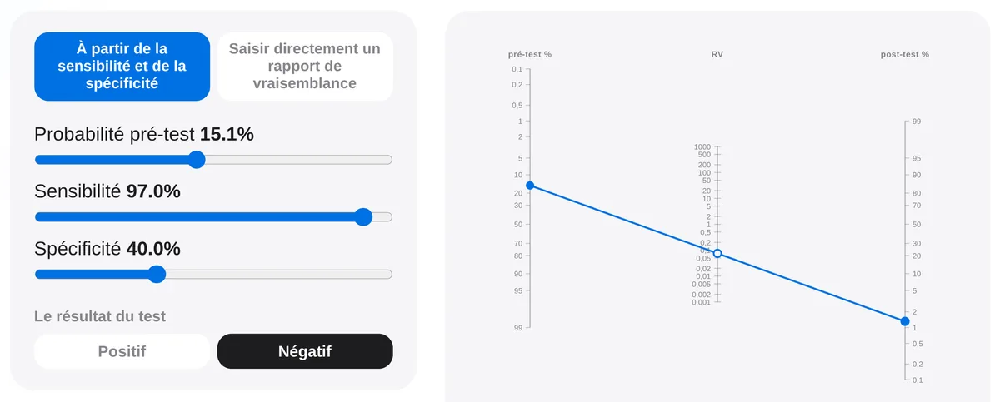
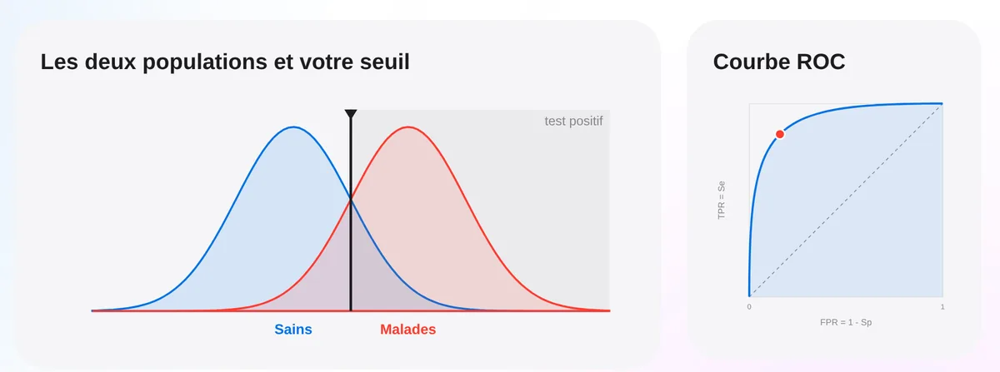
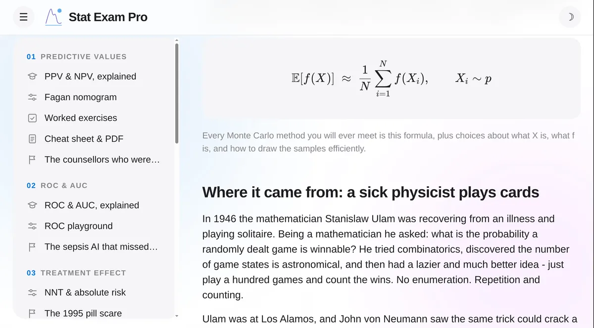

Biostatistique médicale interactive
La biostatistique qui sous-tend la médecine clinique

Calculateurs interactifs
VPP et VPN, NNT, le nomogramme de Fagan, Kaplan-Meier, biais du dépistage - chaque entrée est réglable, et le résultat se recalcule à mesure.

Simulateurs
Classez les patients, déplacez le seuil, et la courbe ROC est retracée à partir des chiffres - de même pour Kaplan-Meier, Monte-Carlo et les autres.

Cours détaillés
Chaque sujet développé de sa définition à son usage, les démonstrations montrées plutôt qu'affirmées, et le raisonnement explicité à chaque étape.
Fiches, prêtes à imprimer
Tout le sujet sur une page dense - définitions strictes, le tableau 2x2, Bayes sous quatre formes, et les chiffres travaillés qui font le point. À lire à l'écran ou en PDF, en français et en anglais.
Voir les fichesDes calculateurs interactifs, des cours détaillés et des fiches assez denses pour réviser.